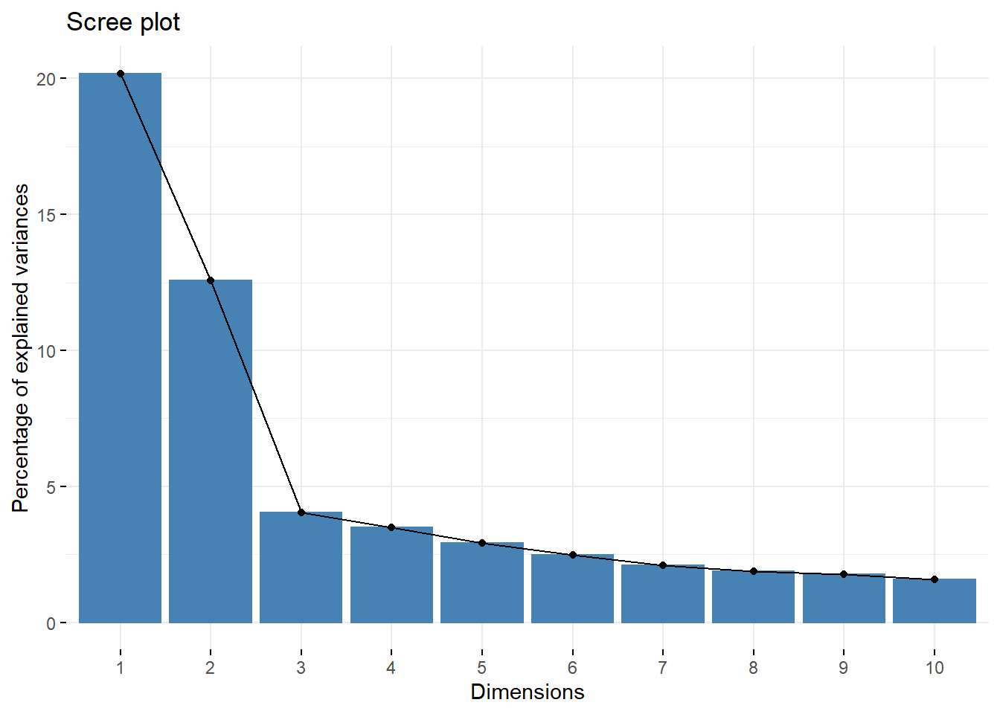
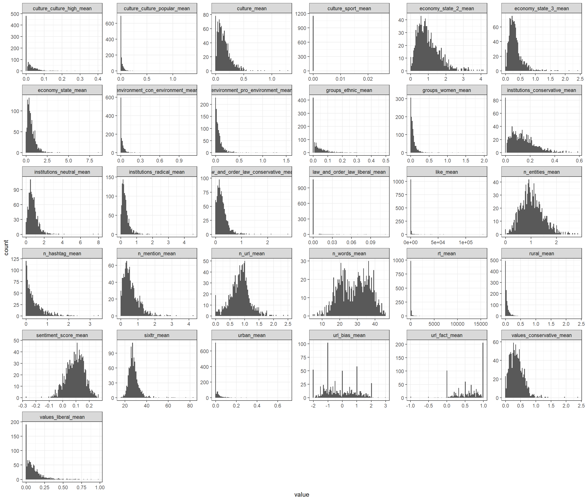
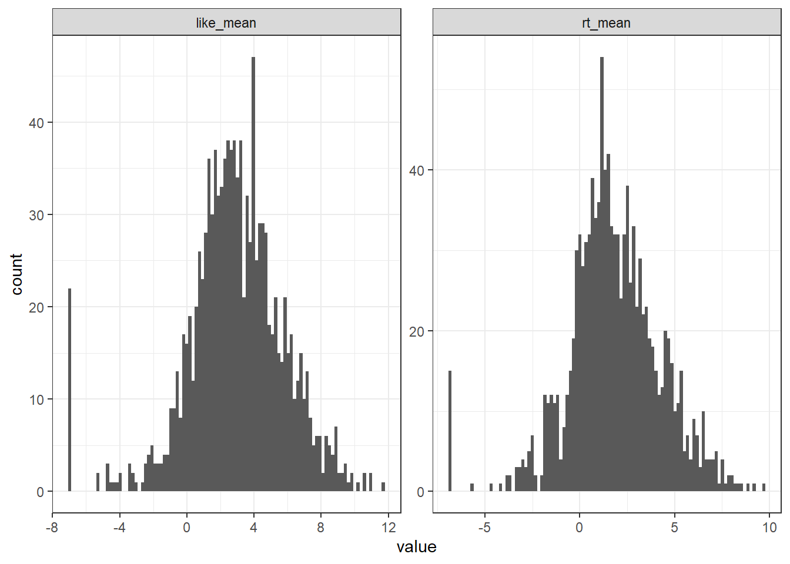
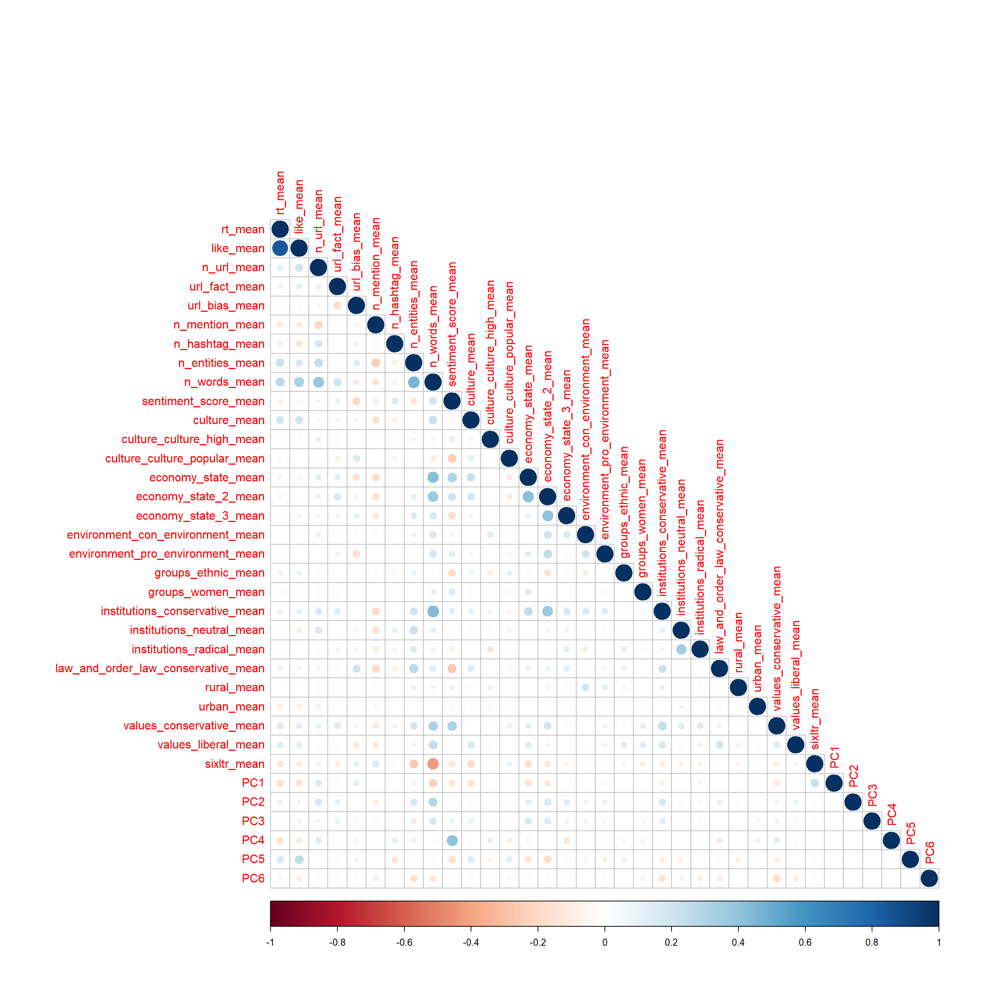
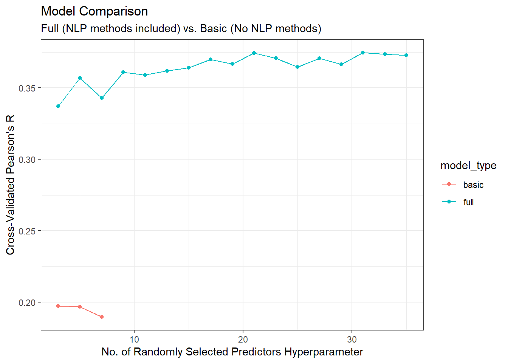
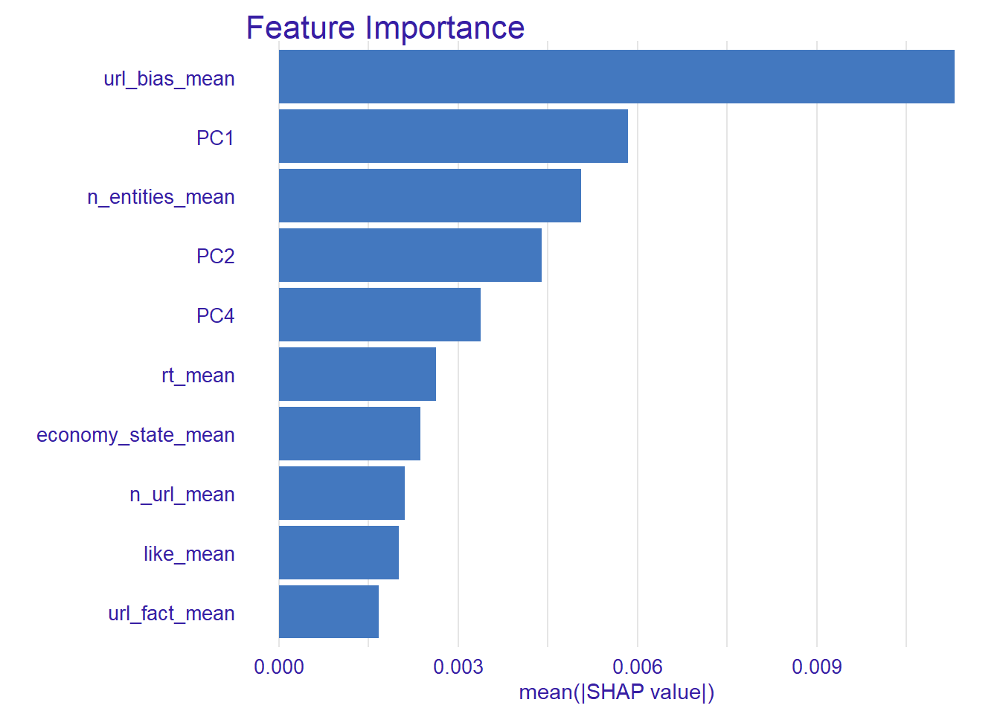
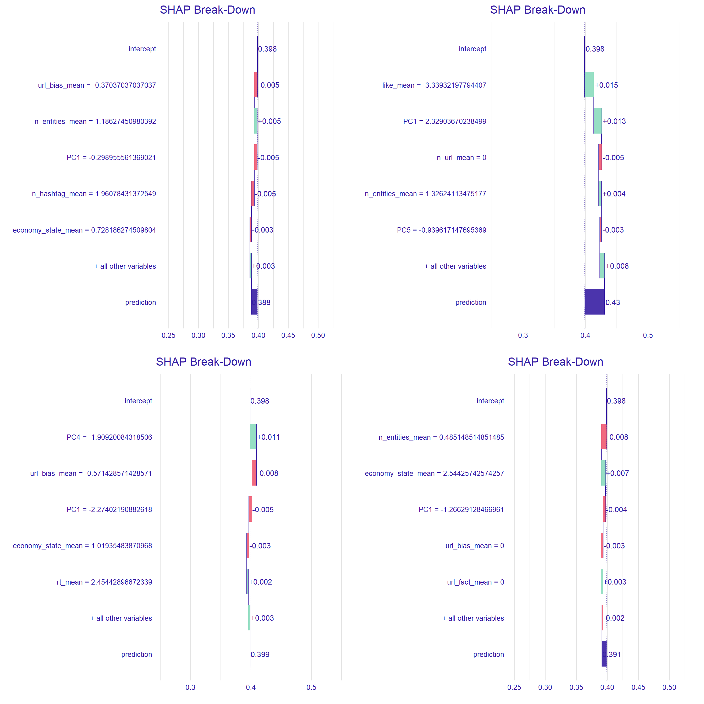

library(tidyverse)
# bind data
train <- read_csv("data/train.csv", col_types = "c")
test <- read_csv("data/test.csv", col_types = "c")
users <- train |> bind_rows(test)Lab in Data Science: Final Assignment
In this report, we outline the measures we took to complete the final assignment of the “Lab in Data Science” course.
We were given a list of Twitter users with a misinformation score. We have been tasked with building a model for predicting this score for other Twitter users. Critically, we were only given the user ID, therefore we needed to come up with a list of features for the model that we thought would be helpful in predicting the misinformation score.
Data Exploration
The whole dataset includes 1163 users. 930 of those users were supplied in the training dataset which comes with the attached target variable, as you can see in the following table.
| id | score |
|---|---|
| 813286 | 0.3425249 |
| 1339835893 | 0.3413333 |
| 50055701 | 0.4601942 |
| 33750798 | 0.4613861 |
| 19394188 | 0.4250000 |
| 18906561 | 0.4813953 |
We have retrieved up to 200 tweets with the most exposure for each user, at the period between 2018-2022, which we thought would be the most relevant for the purpose of this task. This is because during that time period discussion on COVID19 were rampant, as well as the upcoming election in the US.
library(academictwitteR)
library(tidyverse)
# run the loop
for (i in 1:nrow(users)) {
academictwitteR::get_all_tweets(users = users$id[i],
start_tweets = "2018-05-01T00:00:00Z",
end_tweets = "2022-01-01T00:00:00Z",
data_path = "./tweets",
n = 300,
page_n = 300,
bind_tweets = FALSE)
print(paste("progress:", i, "/", nrow(users)))
}
# bind tweets
tweets <- bind_tweets(data_path = "./tweets")
tweets_flat <- jsonlite::flatten(tweets)
tweets_flat <- tweets_flat |> distinct(id, .keep_all = TRUE)
# save rds
write_rds(x = tweets_flat, file = "./data/tweets_raw_full.rds")Some accounts did not have any tweets from that time or were deleted, so we retreived older tweets. Also, some accounts did not have any original tweets from any period, so we resorted to using their retweets.
# Pre Proccessing Downloaded tweets ----
## Read raw data
tweets_raw_full <- read_rds("./data/tweets_raw_full.rds")
## Removing retweets
tweets_no_RT <- tweets_raw_full |>
filter(purrr::map(tweets_raw_full$referenced_tweets, 1) != 'retweeted') # or quoted/repiled to
## count number of tweets after removal, filter users who have under 50 tweets left
tweet_no_rt_count <- tweets_no_RT |>
group_by(author_id) |>
tally()
tweets_count <- tweets_raw_full |>
group_by(author_id) |>
tally() |>
left_join(tweet_no_rt_count, by = "author_id") |>
mutate(n.y = ifelse(is.na(n.y), 0, n.y)) |>
filter(n.y < 50)
## take all tweets of under 50 users
tweets_unfiltered_users <- tweets_raw_full |> filter(author_id %in% tweets_count$author_id)
## Create the final tweets file:
## take the no RT tweet df, bind with under 50 users, then take the top 200 tweets from every user
tweets_final <- tweets_no_RT |>
bind_rows(tweets_unfiltered_users) |>
distinct() |>
mutate(exposure = public_metrics.like_count + public_metrics.retweet_count + public_metrics.reply_count) |>
group_by(author_id) |>
slice_max(n = 200, order_by = desc(exposure)) |>
ungroup() |>
arrange(author_id)
write_rds(tweets_final, file = "./data/tweets_final.rds")Feature Extraction
Most of the work required us extracting features from the tweets that we thought would be useful in predicting the misinformation score. In this part we will explain which features we created.
Simple Metrics
The first features for our model are basic metrics that Twitter provides:
- No. of retweets
- No. of likes
- No. of entities in the tweet (as Twitter’s algorithm identifies)
- No. of URLs
- No. of mentions
- No. of hashtags
- No. of words
# Feature Engineering ----
tweets_features <- read_rds("./data/tweets_final.rds")
## Basic Metrics ----
### Add new columns indicating no. of urls\mentions\hashtags
### note: using the purr package we map the length of the embedded df's.
### this is a workaround to return the number of rows in that df.
tweets_features <- tweets_features |>
rowwise() |>
mutate(n_url = mean(purrr::map_dbl(entities.urls, length)),
n_mention = mean(purrr::map_dbl(entities.mentions, length)),
n_hashtag = mean(purrr::map_dbl(entities.hashtags, length))) |>
mutate(n_url = ifelse(is.na(n_url), yes = 0, no = n_url),
n_mention = ifelse(is.na(n_mention), yes = 0, no = n_mention),
n_hashtag = ifelse(is.na(n_hashtag), yes = 0, no = n_hashtag)) |>
ungroup()
### Add number of words and characters
tweets_features <- tweets_features |>
mutate(n_entities = sapply(purrr::map(tweets_features$entities.annotations, 1), length),
n_words = sapply(text, function(s) stringr::str_count(s, "\\w+")) # letter/digit/underscore only
)Sentiment Analysis
We have decided to conduct a sentiment analysis for every tweet, speculating that it might have predictive value for the misinformation score. We used the sentimentr algorithm, which is able to identify ‘valence shifters’ (e.g., not happy) and valence enhancers (e.g., very happy).
## Sentiment Analysis ----
### Add sentiment analysis with "sentimentr" package
sentiments <- sentimentr::sentiment(text.var = sentimentr::get_sentences(tweets_features$text)) |>
group_by(element_id) |>
summarise(mean_sentiment = mean(sentiment))
### add the mean sentiment for every tweet
tweets_features <- tweets_features |>
mutate(sentiment_score = sentiments$mean_sentiment)knitr::kable(tweets_features |>
select(author_id, text, sentiment_score) |>
tail(3))| author_id | text | sentiment_score |
|---|---|---|
| 993956222 | No need to make this complicated. Folks just want a piece of the action https://t.co/bBSenInFkq | 0.1381465 |
| 993956222 | Justice Robert’s be sayin “whew” | 0.4082483 |
| 993956222 | I’m done you’ve taken enough of my time bye now | -0.0721688 |
Media Reliability
Many of the tweets we have retrieved contain URLs to news sources, and we thought this would be very relevant for the misinformation score.
There are various website that scrutinize news sources and rank their bias and factuality. One of the most famous websites which does that is https://mediabiasfactcheck.com.
We have found a (database)[https://github.com/ramybaly/News-Media-Reliability] which summarizes the news websites listed in https://mediabiasfactcheck.com. As you can see below, each website is categorized into the level of bias towards a certain political orientation, and the level of factuality of its published reports.
media_reliability <- read_tsv("./data/media_reliability.tsv")knitr::kable(media_reliability |>
select(source_url_normalized, fact, bias) |>
head()
)| source_url_normalized | fact | bias |
|---|---|---|
| villagevoice.com | high | left |
| insideclimatenews.org | high | left-center |
| fury.news | low | extreme-right |
| now8news.com | low | center |
| constitution.com | low | extreme-right |
| freebeacon.com | mixed | right |
We have extracted the URLs from the tweets and searched them in the database. If we found a match, we attached the factuality and bias scores to our dataset.
## Media Reliability features ----
### Read the 'media_reliability' dataframe and normalize the urls
media_reliability <- media_reliability |>
mutate(url_name = str_extract(source_url_normalized, pattern = "[^.]+"))
### Create new columns in the df to store the factuality and bias
tweets_features$url_fact <- NA
tweets_features$url_bias <- NA
### find the index of tweets with >0 urls to iterate over them in the loop
index <- which(tweets_features$n_url > 0)
### run the loop
for (i in index) {
# Pluck the url with purrr and normalize it
url_clean <- purrr::pluck(tweets_features$entities.urls, i, "display_url", 1) |>
str_extract(pattern = "[^.]+")
# fetch the factuality and bias metrics
fact <- media_reliability$fact[media_reliability$url_name == url_clean]
bias <- media_reliability$bias[media_reliability$url_name == url_clean]
# if the values above are not empty, impute them into the dataframe
if (length(fact) > 0) {
tweets_features$url_fact[i] <- fact
tweets_features$url_bias[i] <- bias
}
}We have decided to convert the categories into integers to feed into our model. For the bias feature, positive integers indicate a bias towards right-wing views, while negative integers indicate a bias towards left-wing views. A similar procedure was conducted for the factuality categories.
### mutate the variables to integers
tweets_features <- tweets_features |>
mutate(url_bias = case_when(url_bias == "left" ~ "-2",
url_bias == "left-center" ~ "-1",
url_bias == "center" ~ "0",
url_bias == "right-center" ~ "1",
url_bias == "right" ~ "2",
url_bias == "extreme-right" ~ "3"),
url_fact = case_when(url_fact == "high" ~ 1,
url_fact == "mixed" ~ 0,
url_fact == "low" ~ -1),
url_bias = as.numeric(url_bias),
url_fact = as.numeric(url_fact))Dictionaries
Another set of features we added was based on topic dictionaries, thinking that the topic could be indicative of misinformation. We picked a set of dictionaries about culture, economy, institutions, and so on.
summary(quanteda.dictionaries::data_dictionary_LaverGarry) Length Class Mode
CULTURE 3 dictionary2 list
ECONOMY 3 dictionary2 list
ENVIRONMENT 2 dictionary2 list
GROUPS 2 dictionary2 list
INSTITUTIONS 3 dictionary2 list
LAW_AND_ORDER 2 dictionary2 list
RURAL 16 -none- character
URBAN 1 -none- character
VALUES 2 dictionary2 list We have generated scored for each tweet based on the dictionaries. We have also added an additional feature, ‘Sixltr’, which scores the tweets by the number of long words (6 letters and above) in the tweet, possibly indicative of the vocabulary used in the tweet.
## Dictionary ----
### Use the liwcalike function to compute the dictionary simliarity scores
dict <- tweets_features$text |>
quanteda.dictionaries::liwcalike(quanteda.dictionaries::data_dictionary_LaverGarry)
### Bind the results with the main dataframe
tweets_features <- tweets_features |>
bind_cols(dict |> select(culture:values.liberal)) |>
bind_cols(dict |> select(Sixltr))Word Embeddings
We have also created word emeddings for the tweet with the most exposure for every user (we couldn’t do it for all tweets due to the extremely long running time).
First, we cleaned the text from mentions, hashtags and URLs, and converted it to lower case.
## Word Embeddings ----
### Because computing word embeddings takes ages on our machine,
### and because we still wanted to incorporate them, we decided to
### compute on the top tweet of each user.
most_exposure <- tweets_features |>
group_by(author_id) |>
slice(which.max(exposure)) |>
select(author_id, text) |>
ungroup()
### Clean the text to feed into the transformer model:
### Removing @mentions, #hashtags, and "amp" html code
most_exposure <- most_exposure |>
mutate(clean_text = str_remove_all(text, pattern = "@\\w+"),
clean_text = str_remove_all(clean_text, pattern = "#\\w+"),
clean_text = str_remove_all(clean_text, pattern = "amp"),
clean_text = tolower(clean_text))After preparing the tweets, we created word embeddings for each of them. We used a special version of the BERT model which is specifically trained on tweets.
### Compute the word embeddings and save them
for (i in 1:nrow(most_exposure)) {
full_word_embeddings_decon <- text::textEmbed(most_exposure$clean_text[i],
contexts = TRUE,
model = "cardiffnlp/twitter-roberta-base",
decontexts = TRUE)
write_rds(full_word_embeddings_decon, paste0("./data/word_embeddings/","we_",i,".rds"))
print(paste(i,"_",nrow(most_exposure)))
}
# Read all the files and run a loop that combines them and attaches an identifaction row
files <- fs::dir_ls(path = "./data/word_embeddings/", glob = "*rds")
for (i in 1:length(files)){
we_temp <- read_rds(files[i], id)[["x"]] |>
mutate(row = paste(str_extract_all(files[i], "[:digit:]")[[1]],sep="",collapse=""))
if (i == 1) {we <- we_temp}
else {we <- we |> bind_rows(we_temp)}
}
WE_most_exposure <- we |>
mutate(row = as.numeric(row)) |>
arrange(row)Word embedding produced more than a thousand dimensions, so we reduced dimensions by using PCA. We selected the number of principle components by looking at a plot which showed the percentage of variances explained by each principal component.
pca_embeds <- prcomp(WE_most_exposure |> select(!row))
factoextra::fviz_eig(pca_embeds) 
We selected the top 6 PCs and merged them with the feature dataset.
selected_pcs <- select(as_tibble(pca_embeds$x), PC1:PC6)
# Save the engineered rds ----
write_rds(tweets_features, file = "./data/tweets_features.rds")Summarizing Features
As of now, all features except the word embeddings were at the single tweet level. Because we needed to predict the misinformation score at the user level, we aggregated the features by user.
# Summarising features ----
tweets_features <- read_rds("./data/tweets_features.rds")
## Select the relevant columns and rename them
metric_data <- tweets_features |>
select(author_id,
"rt" = public_metrics.retweet_count,
"like" = public_metrics.like_count,
n_url,
url_fact,
url_bias,
n_mention,
n_hashtag,
n_entities,
n_words,
sentiment_score,
culture:Sixltr) |>
janitor::clean_names()
## Calculate statistics - Mean, Median, SD, Kurtosis, Skewness for every metric
### note: id's without any rt\reply\like\quote create NaN and NA's in some statistics
### note: for now, we are using mean only for simplicity's sake
metric_data <- metric_data |>
group_by(author_id) |>
summarise(across(rt:sixltr, list("mean" = ~mean(.x, na.rm=T)))
)
## Replace NAs with 0s in the factuality and bias scores which were sometimes NA
metric_data <- metric_data |>
mutate(across(url_fact_mean:url_bias_mean, ~replace(., is.nan(.), 0)))
## Finally, combine the PCs with the metric data
### Merge the word embedding PCs with the main df
metric_data <- metric_data |>
bind_cols(selected_pcs)After finishing the feature engineering, we looked at the distributions of the features to do some extra fine-tuning, such as: conducting transformations, removing correlated features, and removing features with little variance.
# Visual examination ----
## examine the histograms of the variables, perhaps some should be dropped or transformed
histograms <- metric_data_raw |>
pivot_longer(cols = rt_mean:sixltr_mean, names_to = "metric", values_to = "value")
histograms |>
ggplot(aes(x = value)) + geom_histogram(bins = 100) + facet_wrap(~metric, scales = "free") +
theme_bw()
## After the visual examination we have decided to drop
## "culture_sport_mean" and "law_and_order_law_liberal_mean" due to very low variance
metric_data <- metric_data |>
select(!c(culture_sport_mean, law_and_order_law_liberal_mean))
## Furthermore, we decided to log-transform "rt_mean" and "like_mean"
## due to extreme values
metric_data <- metric_data |>
mutate(rt_mean = ifelse(rt_mean != 0, yes = log(rt_mean), no = log(rt_mean + 0.001)),
like_mean = ifelse(like_mean != 0, yes = log(like_mean), no = log(like_mean + 0.001)))After the transformation, no. of likes and no. of retweets are much more informative, as we can see:
histograms <- metric_data |>
pivot_longer(cols = rt_mean:sixltr_mean, names_to = "metric", values_to = "value")
histograms |>
filter(metric %in% c("rt_mean","like_mean")) |>
ggplot(aes(x = value)) + geom_histogram(bins = 100) + facet_wrap(~metric, scales = "free") +
theme_bw()
We have also looked at a correlation matrix in order to remove features with high collinearity. Initially, we had no. of replies and no. of quotes in the model and removed them due to high collinearity with no. of likes.
## Examine corrplot
cor <- cor(as.matrix(metric_data |> select(!author_id)))
corrplot::corrplot(cor, tl.cex = 1,type = "lower")
# Save final product
write_rds(x = metric_data, file = "./data/metric_data.rds")Modeling
We have chosen to use Random Forest as the method by which we will build our model, because it does not require strict assumptions regarding the data (contrary to linear regression), and the hyperparameter tuning is fairy simple compared to other tree methods (such as XGBoost which has many hyperparameters).
We have decided to train two models, one is based on the simpler features we generated that do not include any NLP tehcniques, and one that is based on advanced methods. This was done in order to see the contribution of advanced NLP methods such as word embeddings and sentiment analysis on the model’s prediction ability.
# Read the train data
train <- read_csv("./data/train.csv", col_types = "c")
# Read the feature engineered data and filter for train IDs only
metric_data <- read_rds("./data/metric_data.rds") |>
filter(author_id %in% train$id) |>
left_join(train, by = c("author_id" = "id"))
# Define custom evaluation metric, in case of this competetion: Pearson's R
customSummary <- function (data, lev = NULL, model = NULL) {
out <- cor(data$obs, data$pred)
names(out) <- "PearsonR"
out
}Basic Features Random Forest Model
Training
In the code chunk below, we trained the model on the training dataset. We have included only the simpler features that we have generated (e.g., no. of likes, no. of entities) without any NLP techniques. We have used a 10-fold cross validation with the custom summary function we defined as the evaluation metric.
# Filter "basic" columns
training <- metric_data |> select(rt_mean, like_mean, n_url_mean, n_mention_mean,
n_hashtag_mean, n_entities_mean, n_words_mean,
score)
# Define Hyperparameter tuning grid
tg <- expand.grid(list(mtry = seq(from = 3, to = ncol(training) - 1, by = 2)))
# Define train control
tc <- trainControl(method = "cv",
number = 10,
summaryFunction = customSummary,
verboseIter = TRUE)
# train
model_basic <- caret::train(
score ~ .,
data = training,
preProcess = c("center", "scale"),
trControl = tc,
tuneGrid = tg,
metric = "PearsonR",
method = "rf"
)
# save model
write_rds(model_basic, "BASIC_RF_MODEL_FINAL.rds")Advanced Features Random Forest Model
Training
For the advanced model, we have used the same training methods, but added the advanced features as well.
# Filter out the author id
training <- metric_data |> select(!author_id)
# Define Hyperparameter tuning grid
tg <- expand.grid(list(mtry = seq(from = 3, to = ncol(training) - 1, by = 2)))
# Define train control
tc <- trainControl(method = "cv",
number = 10,
summaryFunction = customSummary,
verboseIter = TRUE)
# train
model <- caret::train(
score ~ .,
data = training,
preProcess = c("center", "scale"),
trControl = tc,
tuneGrid = tg,
metric = "PearsonR",
method = "rf"
)
# save model
write_rds(model, "FULL_RF_MODEL_FINAL.rds")Model Comparison
Tuning Proccess
When comparing the models we can see that the full model with the NLP-based features has a large advantage over the basic models.
df <- (model_basic$results |> mutate(model_type = "basic")) |>
bind_rows(model$results |> mutate(model_type = "full"))
ggplot(df, aes(x = mtry, y = PearsonR, color = model_type, group = model_type)) +
geom_point()+
geom_line()+
labs(title = "Model Comparison",
subtitle = "Full (NLP methods included) vs. Basic (No NLP methods)",
y = "Cross-Validated Pearson's R",
x = "No. of Randomly Selected Predictors Hyperparameter") +
theme_bw()
Feature Importance with SHAP values
We have also decided to look at feature importance to see which features were most significant. We decided to employ SHAP values for this purpose as they can offer insight into our ‘black box’ with techniques derived from game-theory. The plot below shows the feature importance of our model, meaning, the average impact that each feature had on the outcome of our model.
As we can see in the plot below, the most important features were a product of the advanced NLP methods we have used (e.g., Word embedding PCs, URL bias and the economy state dictionary). But, nonetheless, simpler features definitely played a part as well, as we can see that several of them are ranked quite high (e.g. no. of entities, no. of retweets).
In conclusion, We can see that advanced methods were a significant addition to the model’s predictive ability.
# we used the following package for visualization:
#devtools::install_github('ModelOriented/treeshap')
library(treeshap)
model_unified <- randomForest.unify(model$finalModel,
metric_data |> select(!author_id))
treeshap_res <- treeshap(model_unified, metric_data |> select(!author_id))
plot_feature_importance(treeshap_res, max_vars = 10)
Prediction Breakdown with SHAP values
Just as a bonus, before we move into predictions, we can also utilize the SHAP values to gain insight into how individual predictions were made. Below you can see 4 waterfall plots that illustrate how 4 individiual observations were predicted based on the values of their features.
p1 <- plot_contribution(treeshap_res, obs = 1)
p2 <- plot_contribution(treeshap_res, obs = 5)
p3 <- plot_contribution(treeshap_res, obs = 10)
p4 <- plot_contribution(treeshap_res, obs = 15)
gridExtra::grid.arrange(p1,p2,p3,p4)
Predictions
Finally, after exploring the model for a bit, we used the advanced trained model to predict misinformation scores for the test data set.
# Read the test data
test <- read_csv("./data/test.csv", col_types = "c")
# Read the feature engineered data and filter for test IDs only
testing <- read_rds("./data/metric_data.rds") |>
filter(author_id %in% test$id)
# Make predictions
testing$pred <- predict(model, newdata = testing)
submission <- test |>
left_join(testing |> select(author_id, pred), by = c("id" = "author_id")) |>
rename("score" = pred)
# replacing the NAs with the median for users who didn't have any tweets
submission$score[is.na(submission$score)] <- median(submission$score, na.rm = TRUE)
# replacing the id for indices, for Kaggle
submission <- submission |> mutate(id = 1:n())
# writing submission
write_csv(submission, "./submissions/submission.csv")